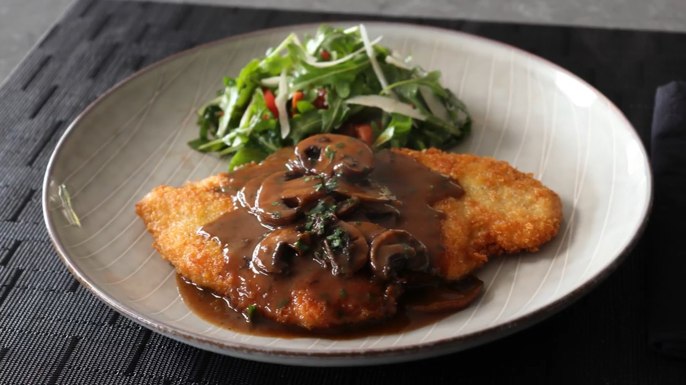

Chicken Marsala Milanese

For me, there's nothing better than a thin, crispy,
pan-fried cutlet of meat, unless that already awesome edible is topped with a rich,
savory mushroom Marsala sauce, which takes everything up to a whole new level.
By the way, the sauce being discussed will take anything up to a whole new level.
So even if pan-fried, crispy cutlets aren't your thing, I hope the sauce makes it
into your permanent recipe repertoire.
Chicken Milanese Ingredients
- 2 (6 ounce) skinless, boneless chicken breast halves
- kosher salt and freshly ground black pepper to taste
- 1 pinch cayenne pepper, or to taste
- ½ cup all-purpose flour, or as needed
- 1 large egg, beaten
- 1 ½ cups panko bread crumbs, divided, or more as needed
- 1 ounce Parmigiano-Reggiano cheese, freshly grated (Optional)
- ¼ cup olive oil for frying
Sauce Ingredients
- 3 tablespoons unsalted butter
- 8 ounces brown mushrooms, sliced
- salt to taste
- 2 tablespoons all-purpose flour
- ½ cup dry Marsala wine
- 2 teaspoons lemon juice
- 2 cups chicken broth
- 1 pinch ground black pepper
- 1 pinch cayenne pepper
- 1 tablespoon chopped flat-leaf (Italian) parsley
- Place chicken breasts between two pieces of plastic wrap,
or a cut-open zip-top bag, and use a meat pounder to flatten
the meat to about 1/4-inch thickness.